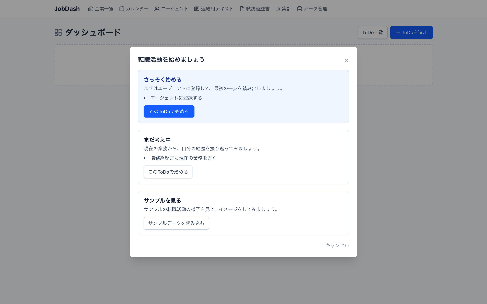
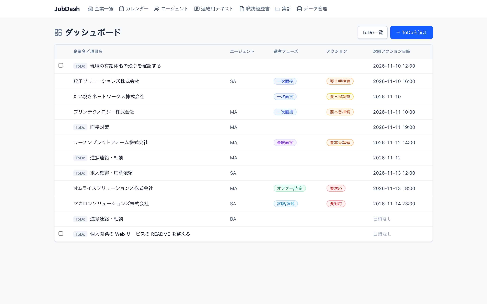
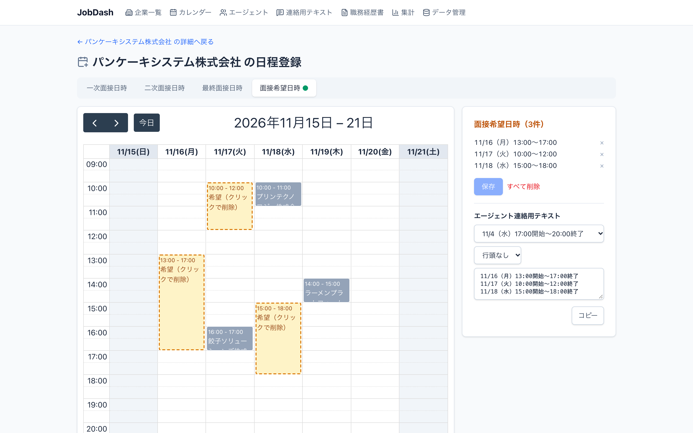
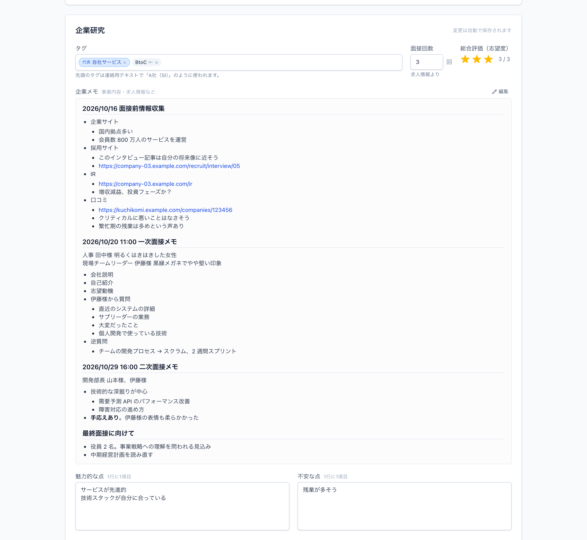
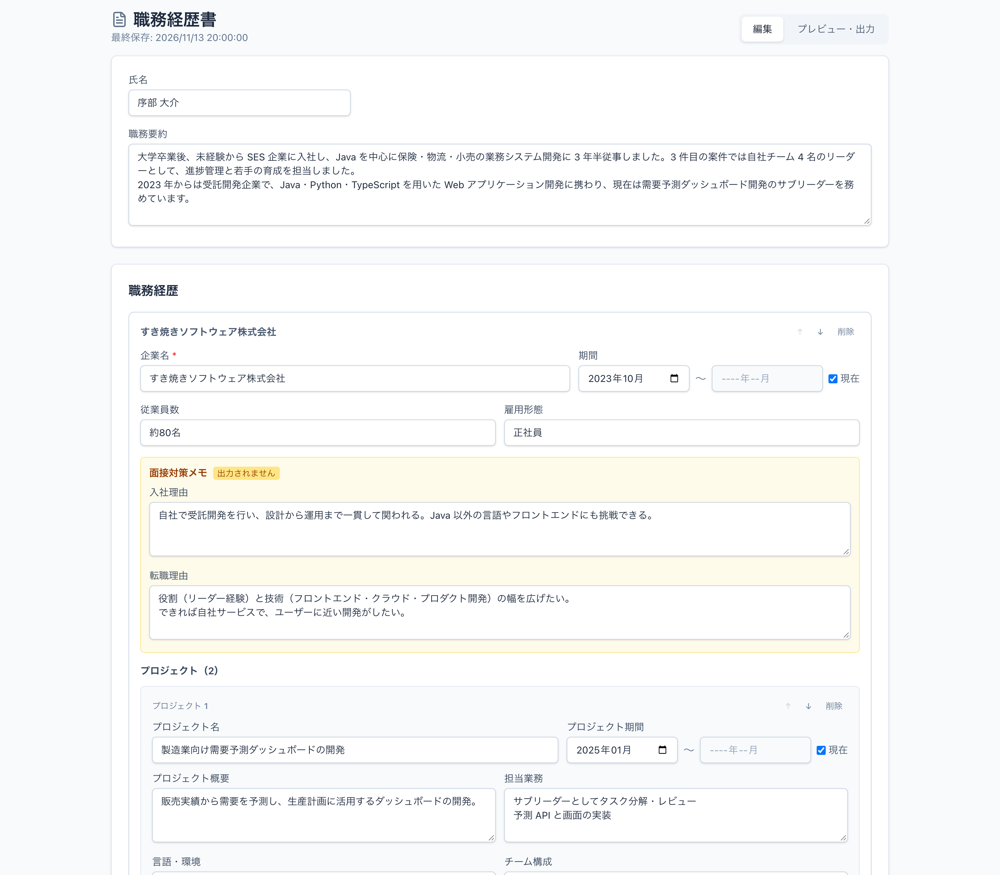
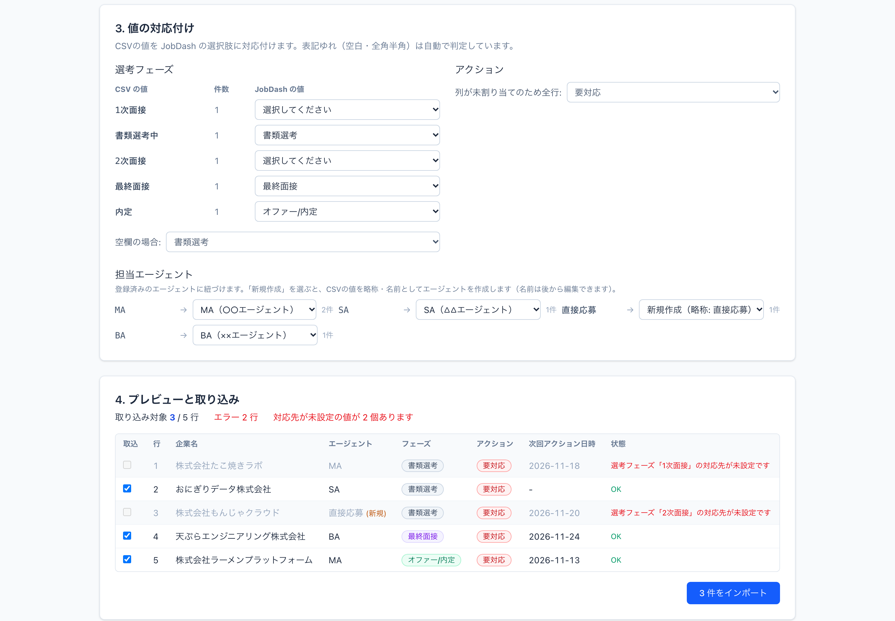

何から始めたらいいかわからない
今やることだけが並ぶダッシュボード
次回アクションのある企業、エージェントごとの ToDo、自分の ToDo を、期限の近い順に 1 つの表にまとめます。
はじめて開いたときは「エージェントに登録する」「職務経歴書に現在の業務を書く」の 2 つの ToDo から始められます。架空の 30 社のサンプルデータで、転職活動の全体像を先に眺めることもできます。

エンジニアのための、オープンソースの転職活動ダッシュボード
localhost で。
応募企業、エージェント、面接日程、企業研究、職務経歴書。
転職活動の情報をひとつにまとめて、どれもあなたの PC の外には出しません。
$ git clone https://github.com/pnspj/jobdash.git
$ cd jobdash && npm install
$ npm start
...
[jobdash] 起動しました → http://localhost:3000
JobDash は、これをまとめて手元の PC だけで片づけるためのアプリです。
何から始めたらいいかわからない
次回アクションのある企業、エージェントごとの ToDo、自分の ToDo を、期限の近い順に 1 つの表にまとめます。
はじめて開いたときは「エージェントに登録する」「職務経歴書に現在の業務を書く」の 2 つの ToDo から始められます。架空の 30 社のサンプルデータで、転職活動の全体像を先に眺めることもできます。

複数のエージェントとの情報共有が大変
「他社の選考状況を教えてください」と聞かれたら、ボタンひとつで文面ができます。面接予定・選考状況・志望度の 3 種類を出力でき、タグや面接回数の表示、企業名に「様」を付けるかどうかも切り替えられます。
エージェントごとに担当者の連絡先や ToDo を管理でき、選考フェーズの集計グラフもエージェント別に表示できます。
◇内定 オムライスソリューションズ株式会社（自社サービス、面接3回） カレーライスシステム株式会社（SI、面接2回） ◇最終面接待ち ラーメンプラットフォーム株式会社（自社サービス、面接3回） ◇二次面接結果待ち 唐揚げテクノロジー株式会社（受託開発、面接2回） ◇一次面接不採用 1社
面接の日程調整が大変
週表示のカレンダーをドラッグして面接の希望日時を選ぶと、エージェントに伝える用の文面ができます。他社の面接はグレーで表示されるので、ダブルブッキングを防げます。
面接日時が確定したら登録するだけで、その企業の希望日時は自動で片づきます。日付の書式は 4 種類のプリセットから選ぶか、自分で決められます。

11/16（月）13:00開始～17:00終了 11/17（火）10:00開始～12:00終了 11/18（水）15:00開始～18:00終了
企業研究が大変
志望理由、入社後の将来像、逆質問、魅力的な点、不安な点、タグ、面接回数、志望度（★3 段階）を企業ごとに残せます。面接の直前に開くページが 1 つで済みます。
書いた内容は、志望度の高い順に並べてエージェントに伝える文面にもなります。

志望度★★★ ◇ラーメンプラットフォーム株式会社 魅力的な点 ・サービスが先進的 ・技術スタックが自分に合っている 不安な点 ・残業が多そう
職務経歴書の Word を書くのが大変
職務要約やプロジェクトごとの担当業務を入力すると、Word・PDF・Markdown・テキストで出力できます。在籍期間は自動で計算します。エージェントごとに提出形式が違っても、出力形式を切り替えるだけで対応できます。
プロジェクトで苦労したこと、強み・弱み、転職理由といった面接対策のメモも、同じ画面に書けます。メモは出力には含まれません。

Excel での管理に疲れた
今使っている管理表（Excel、スプレッドシート、Notion、etc...）から CSV をエクスポートして、JobDash に取り込めます。項目名が違っても、取り込み時に対応付けが可能です。
逆に、全項目を CSV で書き出して Excel などで開くこともできます。

localhost なのか選考状況、志望度、面接で話す転職理由。転職活動の情報は、今の勤務先にも知られたくない、いちばん機微な個人情報です。JobDash はそれを、あなたの PC の中だけで扱います。
あなたの PC
選考データは送りません
メールアドレスもパスワードも要りません。インストールしたその場で使い始められます。
すべて 127.0.0.1 だけで待ち受けます。Next.js
のテレメトリも無効にしています。選考データが PC の外に送られることはありません。
自動で AI に送る仕組みはありません。AI に相談したいときは、出力したテキストから、自分で選んだ部分だけを渡せます。
MIT ライセンスのオープンソースです。気になるところはソースを読めます。CI では gitleaks による秘密情報のスキャンも動かしています。
全データを JSON でバックアップ・復元できます。転職が決まったら、全データをまとめて削除できます。
何から始めればいいか迷ったら、この順に進めてみてください。
登録したエージェントと担当者の連絡先を、エージェント管理に入れておきます。
まずは今の業務から。書いた内容は Word や PDF で書き出して、エージェントに渡せます。
応募した企業を登録して、志望理由や逆質問を書きためます。既存の Excel があれば CSV で取り込めます。
希望日時をカレンダーで選んで送り、確定した面接日時を登録します。
エージェントには連絡用テキストで報告し、志望度と集計グラフで全体を見渡します。
macOS と Linux で動きます。Windows では WSL の上で使ってください。
$ git clone https://github.com/pnspj/jobdash.git
$ cd jobdash
$ npm install
$ npm start「起動しました」と表示されたら、ブラウザで http://localhost:3000 を開きます。終了するときは Ctrl+C を押します。データは Docker の volume に残り、次に起動したときもそのまま使えます。
最初の画面で「サンプルを見る」を選ぶと、架空の 30 社のデータで機能を試せます。試し終わったら「データ管理」から全データを削除できます。
見られません。JobDash は、起動した PC のブラウザから localhost
を開いて使うアプリです。ログイン機能がないため、ネットワークに公開する使い方はしないでください。
同期の機能はありません。「データ管理」から JSON でバックアップし、別の PC で復元すれば移せます。
Docker の volume の中の DynamoDB Local に保存されます。docker compose down -v などで
volume を削除するとデータも消えるので、ときどき JSON でバックアップを取ってください。
npm start で起動したアプリは、外部と通信しません。インストール時の
npm install と Docker イメージの取得は、もちろんネットワークを使います。
開発モード（npm run dev）では、Next.js
がエラー画面にバージョンを表示するために npm レジストリへ問い合わせます。この通信に選考データは含まれません。
かかりません。MIT ライセンスのオープンソースです。
できます。Next.js・Hono・DynamoDB Local・zod で作られた TypeScript のモノレポです。Claude Code
などの AI コーディングエージェントで開発すると、Next.js が frontend/AGENTS.md
を自動で生成します（エージェント向けのドキュメント案内です）。
個人開発のため、対応はできる範囲になります。不具合は Issues へ、脆弱性は公開せずに SECURITY.md の方法で報告してください。